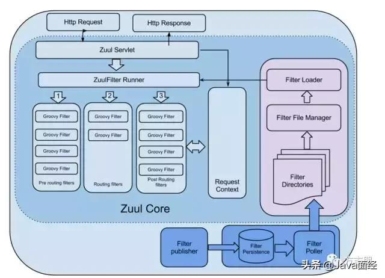
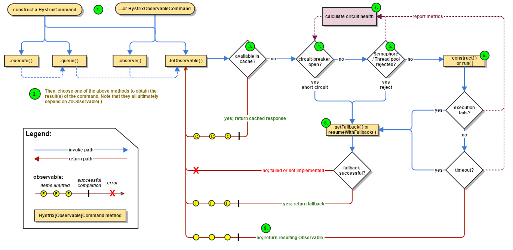
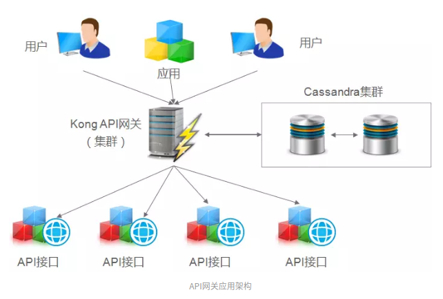
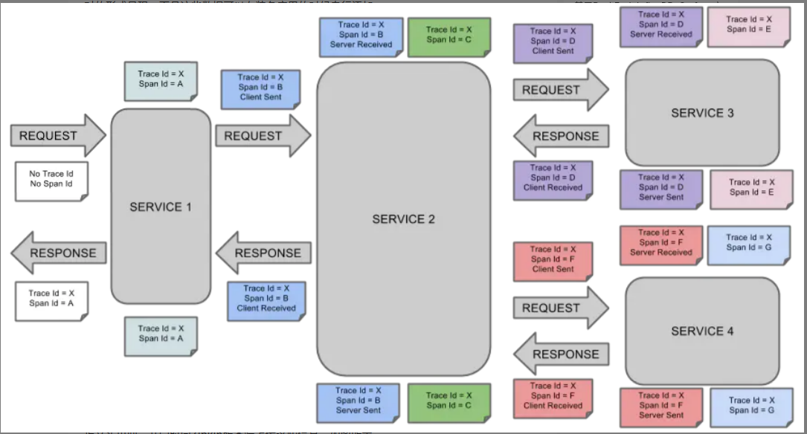
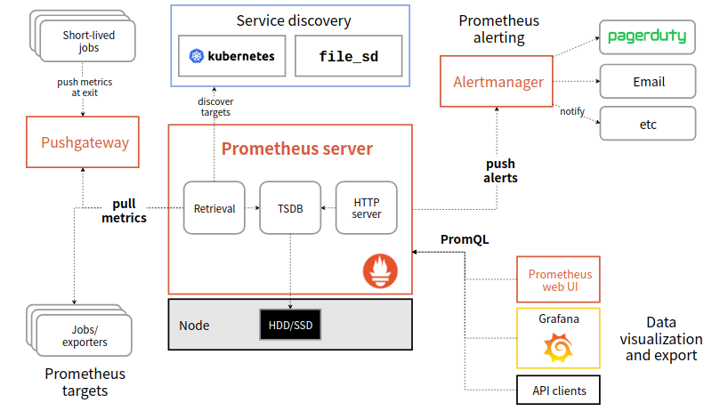

随着产品的设计的结束，如今进入架构设计阶段，需要选择一些基础的组件来完善系统。去年年初学习了微服务架构，包括杨波架构师对微服务的简单介绍以及陈皓老师对分布式系统的介绍，年中又接触了K8S，对其结构略懂一二。在这种背景下，来进行框架的选择。
概述
微服务架构功能方面需要的功能包括：服务发现、负载均衡、熔断限流、流量分析、日志聚合、配置中心、调用链监控、性能监控、自动化部署等。可以将它们分成3层：网关层，主要做流量控制；服务层，主要对各服务提供支持；运维层，自动化部署。分别来选择。
网关层
这一部分我把它定义为流量在系统与业务服务之间的阶段，入、出都算在其中。包括nginx，zuul中servlet的filter，K8S的ingress以及service。
在功能上，它包括：负载均衡、安全认证、熔断限流、流量日志等内容
在实现上，确实在向2个方向发展：1. 统一的网关，2. Service Mesh
Eureka


Provider与Server：Eureka服务发现是服务的Provider通过注册到 Eureka Service中，并Keep Alive。这里的Eureka sever可能有多个，它们之间做数据的同步，保持一致性。
Consumer与Server：这里可能有多种方式，Server将数据同步到Eureka Client上，在杨波课程中，这里称作LB，也就是在这里确定选择哪个Provider进行通讯
由此可见Eureka是做了Cosumer发现Provider，提供负载均衡的功能。这个在K8S中，service与pod之间的关系，就是做了这个事情，由于pod的短暂特性，ip会发生变化，通过service，不仅能提供统一的服务，也能流量在多个pod中均衡
Zuul

Zuul是一个Servlet，里边有很多的filter，分成Pre routing filter，Routing filter，Post Routing filter等部分，Request Context在filter之间保存状态。除此之外，写的filter通过客户端的Filter Poller传递到服务的Filter Directory下，并最终由Filter Loader加载进Zuul中。
那Zuul跟Servlet有什么区别呢？最主要的区别应该是，Servlet是在每个服务中起作用，而Zuul是一个统一的网关。这样看，将认证授权、流量分析等工作放在Zuul上就会比较适合。
Hystrix

Hystrix为分布式系统提供了限流、熔断、降级的功能，
Hystrix对请求进行了封装。被调用方在Hystrix中被称为依赖项，利用HystrixCommand或HystrixObservableCommand封装对依赖项的请求。收到请求后，先查看是否有缓存，如果有就直接返回；然后查看Circle-breaker是否open，没有open，就直接进行降级处理；然后看线程池的状态，如果满也进行降级处理；没满的情况，正常执行，并对执行结果进行跟踪，如果执行失败或者超时，都进行降级处理。 这些失败的情况，会被汇总在一起，决定circuit-breaker是否open。
在这里可以看到，增加缓存以应对大流量是有效措施；有趣的是对circuit-breaker的控制上，有个反馈回路在在起作用；在判断系统是否满状态时，Hystrix参考了2个指标：线程池与调用结果。这对没有线程的情况如何控制呢？
以上3者是spring cloud中提供的组件，都是Java写的，可以提供做负载均衡、安全认证、流量分析、熔断限流等功能。在K8S，Eureka的价值就不高，Hystrix虽然有趣，但它对服务有浸入，对非Java应用的可用性有待查看。下边分析一下K8S中的网关
K8S的ingress
K8S的网关是Ingress，它提供了一个类似 ConfigMap 的接口功能 ，用户可以以 [ host - paths -> services ] 的形式 , 在 Ingress 里建立一个个映射规则 , 然后启动一个 Ingress Controller（nginx为主） , Ingress Controller 将订阅 Ingress 里的配置规则并转化成 Nginx 的配置 , 然后对外部提供服务。在对外网暴露地址的时候, 只需要暴露 Ingress Controller 自身就行了, 所有服务可以被隔离在集群内部。
kong

链接
Kong主要有三个组件：
Kong Server ：基于nginx的服务器，用来接收API请求。
Apache Cassandra/PostgreSQL ：用来存储操作数据。
Kong dashboard：官方推荐UI管理工具
Kong采用插件机制进行功能定制，插件集（可以是0或N个）在API请求响应循环的生命周期中被执行。插件使用Lua编写，目前已有几个基础功能：HTTP基本认证、密钥认证、CORS（Cross-Origin Resource Sharing，跨域资源共享）、TCP、UDP、文件日志、API请求限流、请求转发以及Nginx监控。
Kong在架构中的位置与Zuul类似，通过这种AOP的做法，在请求上做一些工作。Kong可以集成到K8S中，位置应该就是Ingress。链接
ps：用Kong去访问权限数据库是否妥当？
Istio

Istio是ServiceMesh的一种设计，ServiceMesh可以分成2部分：控制平面与数据平面，Istio控制平面主要分为三大块，Pilot、Mixer、Istio-Auth, 数据平面是Envoy Proxy.
Pilot: 主要作为服务发现和路由规则，并且管理着所有Envoy，它对资源的消耗是非常大的。对应Eureka
Mixer: 主要负责策略请求和配额管理，还有Tracing，所有的请求都会上报到Mixer。对应Hystrix，它的限流与Hystrix不相同，是面向流量的一张限流方式，好处是不浸入服务。
Istio-Auth: 升级流量、身份验证等等功能。对应Zuul
Hystrix可以被视为白盒监控工具，而Istio可以被视为黑盒监控工具，主要是因为Istio从外部监控系统并且不知道系统内部如何工作。每个服务中有Hystrix来获取所需的数据。Istio是通过Envoy Proxy 来实现熔断和限流机制的，Envoy 强制在网络层面配置熔断和限流策略，这样就不必为每个应用程序单独配置或重新编程。
Istio嵌入K8S利用了CRD（customResourceDefinition）。在k8s中，它是在Ingress后边，service之前的位置，自称Virtual Service。
服务层
Consul

官网
Consul的介绍找到的几个都或多或少的存在问题，结合官网及这些资料，简单写一下。
Consul可以在多个数据中心中，在每一数据中心中，每个Consul的节点被成为Agent，Agent管理注册的服务信息，提供查询响应，运行检查等功能。Agent通过Gossip协议来做彼此之间的发现。一般配置3个或这5个Server，这些Server通过Raft算法产生唯一的Leader。注册到Client上的服务会被转发到Server做存储，Leader负责同步数据到所有端，并且负责与其他数据中心的Leader通信。
从功能上看Consul功能包括：服务发现与配置中心
service discovery：consul通过DNS或者HTTP接口使服务注册和服务发现变的很容易，一些外部服务，例如saas提供的也可以一样注册。
health checking：健康检测使consul可以快速的告警在集群中的操作。和服务发现的集成，可以防止服务转发到故障的服务上面。
key/value storage：一个用来存储动态配置的系统。提供简单的HTTP接口，可以在任何地方操作。
ps：consul的集群很有趣，值得研究。K8S中可以通过control感知到Pod的运行状态，也就做了Pod的健康监控，Consul更接近与服务的健康检查。另外还有配置中心的功能，在K8S中有ConfigMap功能与配置中心有重合的地方，比如说启动的端口，这种配置还是在ConfigMap中好一些，但比如说每个服务中用的业务配置，放在Consul里也会很舒服。另外Consul是用Go实现的。
zipkin

链接
调用链监控，有2个基本概念，trace与span，trace代表调用链，span代表它在每个调用节点。
从功能上除了对调用进行性能分析， 也可以看出服务间依赖，以此来排查依赖环的产生
Promethues

链接
Promethues是基于时序数据库的监控组件，通过server主动去抓取exporter上的数据，或者可以先将数据Push到PushGateway上，然后server再去PushGateway上去抓取数据。server将数据存在时序数据库（TSDB）上。 在输出上，可以通过alert将一些告警通知出去，也支持UI页面通过自定义的语句（PromQL）查看数据。
ELK
ELK是Elasticsearch、Logstash、Kibana，它本质上建立在NoSQL（document）上的搜索引擎，主要是Elasticsearch。拿来做日志聚合的事情正好，可以方便查看各种日志。
一度被一个问题困恼着：Promethues与ELK应该选哪个？Promethues 的数据是按一定时间采集的，注的更多是系统的运行瞬时状态以及趋势，即使有少量数据没有采集也能容忍，本质是一种监控；ELK对实时监控力有不逮，本质上是对日志的存取，比如去看一个故障，Promethues可能没有采集到这个数据，那只能从ELK上看。 所以它俩确实有些重合，但2者可以兼得。
运维
Jenkins
链接
Jenkins是一个可扩展的持续集成引擎，当程序员提交代码，从代码Repository处得到通知，然后做 Build -> Test -> Package -> Deploy 等工作
通过pipeline可以完成 clone代码 => test代码 => build镜像 => push镜像 => 修改k8s的yml => apply yml的过程
总结
| 名称 | 位置 | 用途 | 语言 | 是否需要 | 优先级 |
|---|---|---|---|---|---|
| Zuul | 网关 | 安全认证、流量日志 | Java | No | |
| Kong | 网关 | 负载均衡、安全认证、熔断限流、流量日志 | Lua | No | |
| Hystrix | 网关 | 熔断限流 | Java | No | |
| Istio | 网关 | 负载均衡、安全认证、流量日志、熔断限流 | Go | Yes | 5 |
| Eureka | 网关、服务 | 服务发现、负载均衡 | Java | No | |
| Consul | 服务 | 服务发现 | Go | Yes | 3 |
| Zipkin | 服务 | 调用链监控 | Java | Yes | 4 |
| Prometheus | 服务 | 监控 | Go | Yes | 5 |
| ELK | 服务 | Java | 日志 | Yes | 4 |
| Jenkins | 运维 | Java | Yes | 5 |